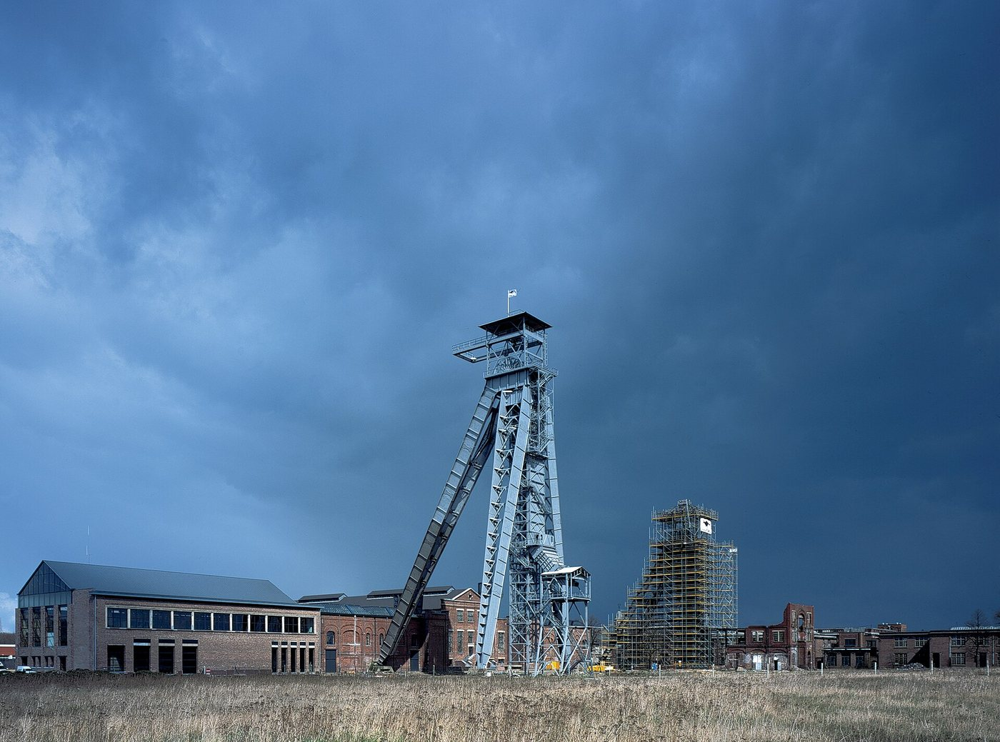

- Language
- Turkish · French · English
- Time difference
- 2 hours in winter, 1 in summer
- First session
- Free
- Emergency
- 112 · 1813 · 0800 32 123
A life built from under the ground
The first scene of migration from Turkey to Belgium lay hundreds of metres underground. The coal mines at Genk, Winterslag, Waterschei and Zwartberg, and at Beringen, Houthalen, Zolder and Eisden, were the mines that warmed post-war Europe, and in the 1960s miners from Turkey and Morocco joined the Italian, Spanish and Greek workers. The mines closed one by one between the end of the 1980s and the early 1990s; the headframes of Winterslag stand today as part of a cultural centre. But the miners and their families stayed; the mining settlements of Limburg became the first neighbourhoods of families from Turkey in Belgium.


Another feature of the migration from Turkey to Belgium is the strength of chain migrations from particular places. Between the Emirdağ district of Afyonkarahisar and Belgium such a close bond was formed that Emirdağ is today called “Little Belgium” in Turkey and fills in summer with cars with Belgian plates. This density turns exile from a loneliness into the life of a village, a town, carried on divided between two countries. It has a psychological price too: a community in which everyone knows everyone is a shelter, but it can also be a gaze. Not being able to take a decision about one’s own life without thinking of what will be said back home is a familiar feeling for many young people growing up in Belgium.
Between two languages in a bilingual country
Belgium is itself a country that lives between two languages. In the north Dutch is spoken, in the south French; Brussels is bilingual. For a young person of Turkish origin this means growing up between not two but three languages: Turkish at home, Dutch or French at school, often both in the street. The sessions can be held in Turkish, French or English. For someone educated in French, who has built his thought in this language, it is a further possibility that French is one of the liveliest languages of psychoanalysis.
In this respect Belgium is a special country for psychoanalysis too. The work of Antoine Vergote at Leuven and of Paul Verhaeghe at Ghent built one of the strongest academic traditions of Lacan’s thought outside France. For students and researchers living in Belgium who are interested in Lacanian psychoanalysis, on the French page you will find information about supervision and academic consultation.
What is often talked about in the sessions
Among the questions analysands living in Belgium bring to the sessions are building one’s own life under the gaze of the community, marriage and family expectations, experiences of exclusion in language and school life, the old age and illnesses of parents who worked in mines or factories, the relation with the distant homeland and the decision to return.
Practical information
Time difference. Belgium uses UTC+1 in winter and UTC+2 in summer. Turkey is UTC+3 all year; it is two hours ahead in winter and one in summer.
Insurance. In Belgium health insurance (ziekenfonds, mutualité) covers, under certain conditions, part of the sessions with psychologists contracted in Belgium. Sessions with a practitioner working outside Belgium are not within this scope.
In an emergency
These sessions are not an emergency service. If there is a danger of harming yourself or someone else, call 112 at once. If you are having thoughts of suicide, you can reach the Dutch-language Zelfmoordlijn on 1813 and the French-language Centre de Prévention du Suicide on 0800 32 123.
- Emergency services112
- Zelfmoordlijn (Dutch)1813
- Centre de Prévention du Suicide (French)0800 32 123
- Tele-Onthaal (Dutch)106
- Télé-Accueil (French)107
Frequently asked questions
Can we hold the sessions in French?
Yes. The sessions can be held in French, Turkish or English; it is also possible to move between languages. I do not offer sessions in Dutch.
Does the mutualité or ziekenfonds cover the sessions?
No. Health insurance in Belgium covers part of the sessions only with specialists contracted in Belgium. These sessions are outside the insurance system.
The first session is free. To arrange a day and time or to ask your questions, you can write to me in Turkish or French.
Contact form